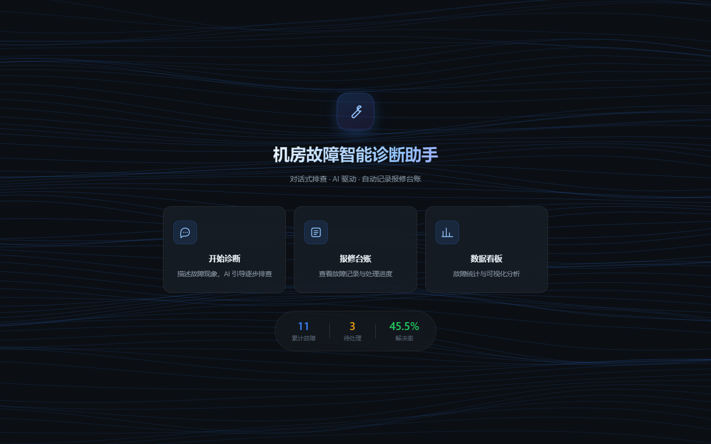
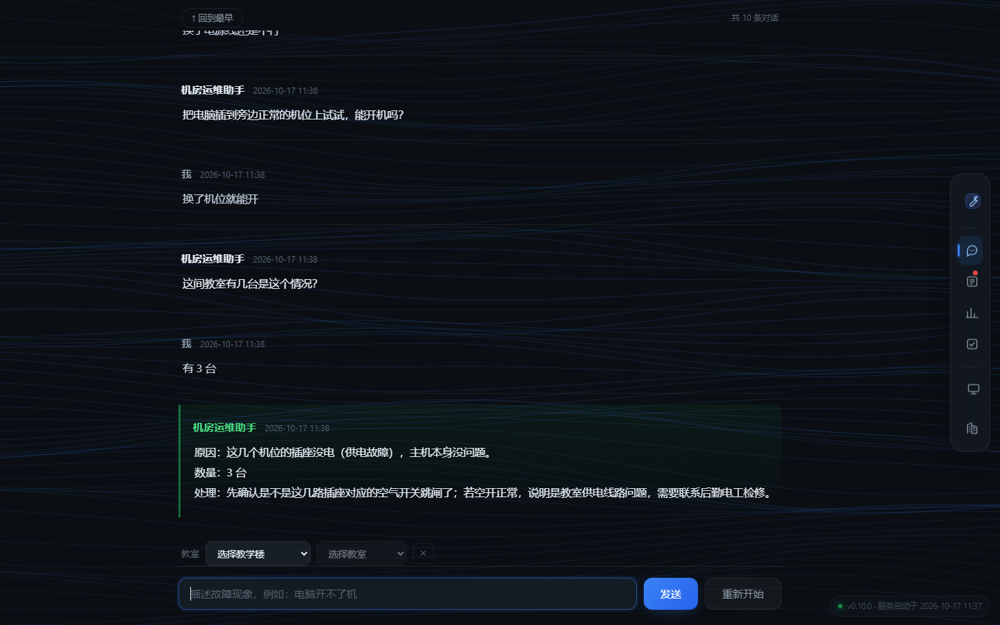
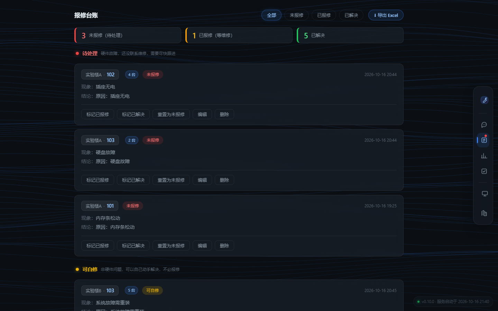
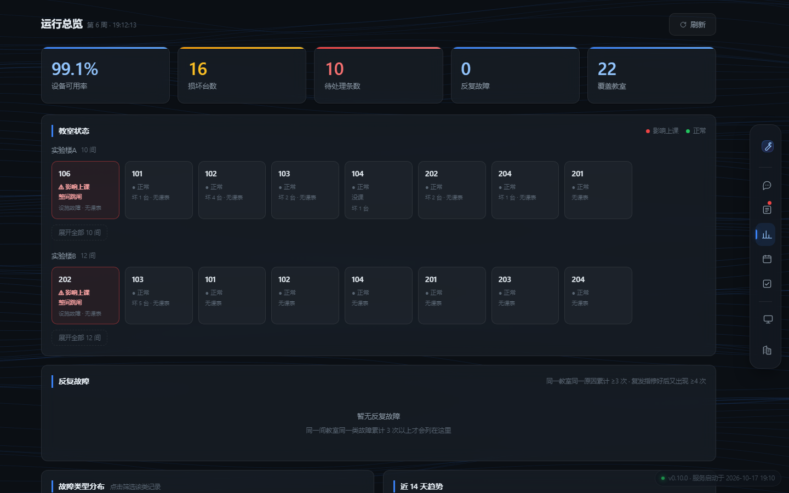
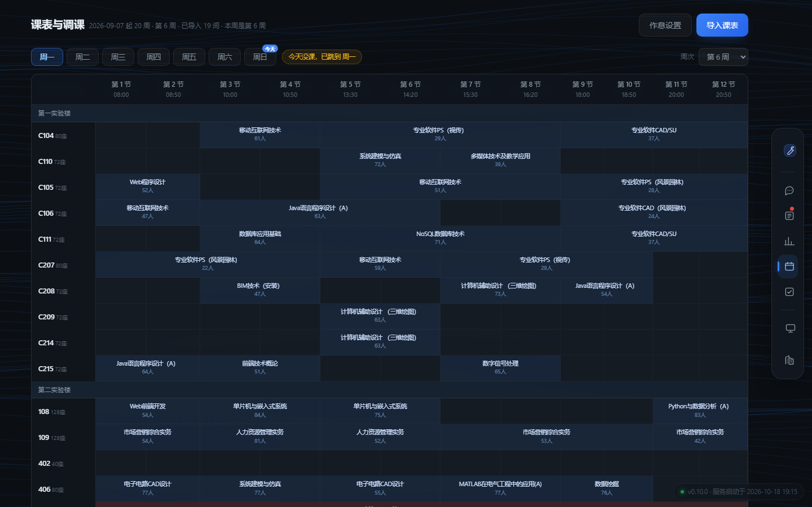
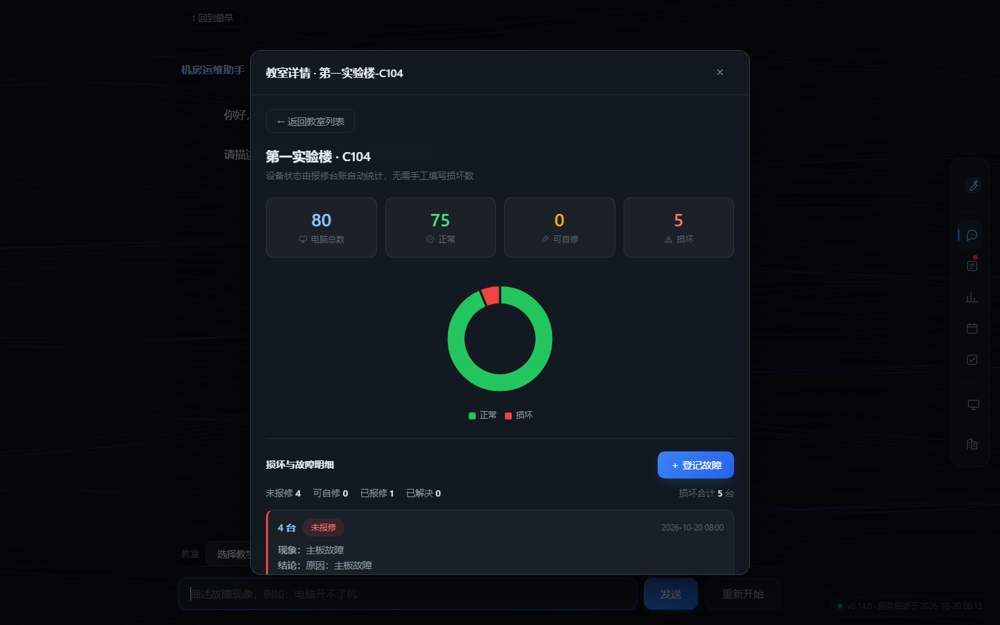
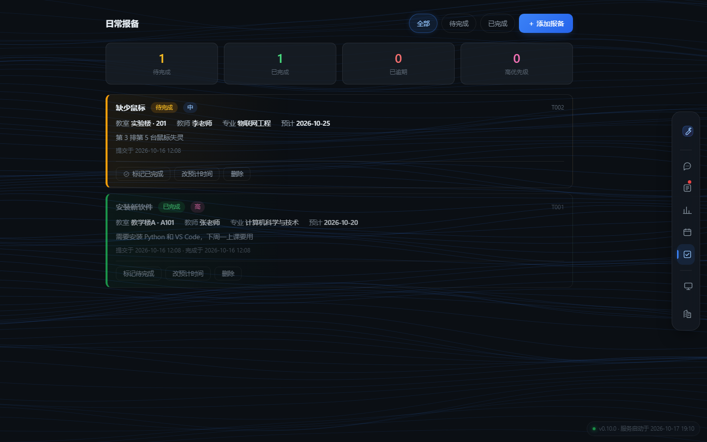

| 作品名称 | 机房故障智能诊断助手 |
| 参赛赛道 | AI 创新应用挑战赛 |
| 作者 | 李一硕 |
| 学校 | 沧州交通学院 · 物联网工程 |
| 作品版本 | v0.15.0 |
| 提交日期 | 2026 年 10 月 |
学校机房的一线值班员大多是刚招进来的大一、大二学生。 他们会判断「这台电脑好像坏了」，但说不清「到底哪儿坏了」—— 是电源、内存、还是主板？是一台还是整排？
于是每天都在发生三件事：
这个项目把这条链路补上了：从一句模糊的描述，一路推到「哪节课上不了、可以挪到哪」。
记录故障 → 区分故障对象 → 故障分类 → 发现反复故障
→ 判定是否影响上课 → 结合课表与作息
→ 算出哪几节课受影响 → 匹配当前空闲的教室作者本人负责 23 间机房、约 1840 台计算机的日常运行保障， 其中 19 间的台账、课表和设备状态已完整接入本系统。
| 形态 | 怎么用 | 适合谁 |
|---|---|---|
| 桌面窗口版 | 双击 机房故障智能诊断助手.exe，直接弹出一个最大化窗口。
不用装 Python，不用开浏览器，没有控制台 |
推荐，值班室电脑 |
| Web 版 | 双击 start.bat，自动起服务并打开浏览器 |
开发调试、临时演示 |
| 命令行版 | python main.py |
无图形界面环境 |
这是整个项目最核心的设计判断。
设备台账里「坏了几台」是最容易被统计出来的数字，但它回答不了运维每天真正要回答的问题：
78 人的课坏 2 台，照样能上；教师机坏了，一台不缺也上不了。 所以判定改成四条，命中任一即算「影响上课」：
| 条件 | 判定依据 |
|---|---|
| 整间跳闸 | 未解决的教室设施故障，且现象含总闸 / 跳闸 / 停电 / 短路 / 漏电 |
| 整间断网 | 故障对象是教室设施，且提到交换机 / 上联 / 路由器（机房课离不开网络） |
| 教师机故障 | 未解决故障出现在教师机 / 讲台 |
| 座位不够 | 可用台数 < 该节次选课人数 |
空调故障不计入 —— 课还能上。这个取舍是刻意的。
最早的实现只扫「今天」。结果周日晚上打开系统时，今天没课 → 整块空白， 而明天一早八点的课此刻就受着故障影响，完全看不到。
现在范围是今天 + 明天，每条标清「今天 周六」「明天 周一」， 并且按「教室 + 日期」合并：
合并前 14 条（409 一间教室就占 5 条，面板全是同一间）
合并后 2 条
明天 周一 第 1–12 节 第二实验楼-409 12 节课 整间断网 最多 74 人
明天 周一 第 5–6 节 第一实验楼-C110 2 节课 可用 71 台 < 72 人教室坏了，最急的不是「这台怎么修」，而是这节课去哪上。
点课表里的任意一门课，直接列出可用的替代教室，排序规则是：
底部同时写清楚为什么排除了其他教室：几间座位不够、几间目标时段有课。 把取舍摆出来，使用者才知道这个建议靠不靠谱。
这个项目对 AI 的定位很克制：
| 谁 | 做什么 |
|---|---|
| AI | 把「电脑打不开」推到「电源供应器损坏」—— 回答是什么坏了 |
| 人 | 决定修不修、报不报、要不要调课 —— 回答该怎么办 |
所以对话里绝不出现「把内存条拔下来重新插」这类操作指引 —— 一线值班员的职责是判断和上报，不是拆机箱。
同一间教室、同一类故障累计 ≥3 次时单独列出。 反复换内存条可能是插槽氧化，反复报电源故障可能是教室供电不稳 —— 这类信息在逐条记录里看不出来，必须聚合。
课表里有真实教师姓名，作品中不得出现。脱敏放在接口返回时做， 而不是前端 —— 前端做的话，真名仍然在接口 JSON 里，打开开发者工具就能看到。
全部数据存放在程序同目录的 data/ 下，不联网、不上传。
| 位置 | 做什么 | 技术 |
|---|---|---|
| 对话式逐层排查 | 根据使用者的描述，一次只问一个最关键的问题，逐轮缩小范围， 最终给出故障原因与影响数量 | DeepSeek API + 强约束系统提示词 |
| 知识库检索增强 | 在提问前先检索历史案例，把最相关的几条塞进上下文， 让判断基于真实积累而不是泛泛而谈 | 轻量 RAG：3-gram + 同义词归一，无向量库 |
| 知识库自动沉淀 | 每次诊断结束后，把「现象 → 原因」自动写入案例库， 人工案例与自动案例分文件存放，互不污染 | 去重 + 并发写入保护 |
大模型最容易犯的毛病是「一次给太多」和「不懂装懂」。 系统提示词里写死了这几条：
· 一次只问一个问题，问完等回答
· 严禁一次列出多个排查步骤
· 严禁输出大段原理和解释
· 严禁重复已经排除过的检查项
· 严禁使用「首先、其次、最后」这种结构化列点
· 不确定就说不确定，不要编一个原因这些规则不只写在提示词里，也写进了测试 —— 产出格式不合规会被识别出来。
| 测试文件 | 用例数 | 覆盖内容 |
|---|---|---|
test_schedule.py | 56 | 课表解析、脱敏、周次推算、空余查询 |
test_overview.py | 47 | 影响上课判定、断网、预警跨天、调课筛选 |
test_quantity_and_status.py | 38 | 数量解析、状态迁移、批量登记 |
test_knowledge.py | 37 | 检索质量、假阳性防护、自动沉淀 |
test_fault_category.py | 36 | 故障细分类、反复故障阈值 |
test_excel_export.py | 32 | 报表口径、纵向合并、合计行 |
| 其余 10 个文件 | 125 | 台账、并发锁、路径解析、桌面启动器等 |
CI 在 Windows 与 Ubuntu 两个操作系统、Python 3.10 与 3.12 两个版本上各跑一遍， 共四个组合。测试不调用真实大模型 API，因此不需要 Key 也能跑。
「用 AI 做项目」最大的风险不是它写不出代码，而是它写错的时候看起来是对的。 举一个真实发生的例子。
最初的分类器同时匹配「故障现象」和「诊断结论」两处文本。 十八条例题里有三条判错，而且错得很一致 —— 都往「显示故障」偏。
查下来原因很清楚：诊断结论里包含鉴别诊断，比如
换线后显示器正常，问题在主机端这句话本意是排除显示问题，但关键词匹配只看到「显示器」，于是判成了显示故障。
这类问题靠「看一眼觉得没问题」是发现不了的，必须靠固定的测试集。 所以后续每加一个分类规则，都要先跑一遍历史数据。
并发沉淀的测试曾经用 8 条「只差一个字符」的症状当作不同故障， 而系统的去重逻辑会把它们正确判为重复。 在 Windows 上线程启动慢，8 个线程恰好在任何写入之前都查完了重， 于是全部写入、测试通过；换到 Linux，进程启动快，立刻失败。
知识库规模不大（手工案例 23 条 + 自动沉淀），引入向量数据库和嵌入模型得不偿失。 最终实现是字符 3-gram 切分 + 同义词归一 + 加权打分，纯 Python，零依赖。
迭代中发现过一个典型问题：用户搜「整间教室断网」检索不到， 因为案例正文写的是「无法上网」。同义词表没打通，加分永远加不上。 修复方式是切分前先扫描原文做同义词归一。
设备不是「好」和「坏」两态。实际运维里有第三种： 可以自己修（比如驱动问题、线松了），不需要报修。 所以模型是四态：
未报修 → 可自修 → 已报修 → 已解决
↑ |
└────── 重置 ────────┘这个模型直接决定了台账的排序、统计口径和看板上的「待处理」数量。
Flask 默认多线程，两个请求可能同时「读-改-写」同一个数据文件。 没有锁时，后写的会覆盖先写的，直接丢数据。
最终实现是两层锁：进程内 threading.RLock + 跨进程文件锁
（Linux 用 fcntl，Windows 用 msvcrt）。
第二层必须可重入，否则内层调用会死锁。
学校导出的是一间教室一个 .xls 文件，格子里是五段式内容：
专业软件CAD/SU/(5-5节)1-8周/石嘉伟/专业软件CAD/SU-0002/选课人数：26
难点在于课程名和教学班名里都可能带斜杠，按 / 硬切会碎成 7 段。
最终用「(N-N节)X-Y周」这一段做锚点，前后分别处理。
文件格式按文件头判断而不是后缀（学校系统的后缀经常不准）：
OLE2 走 xlrd，ZIP 走 openpyxl。
Web 形态每次要先起服务再开浏览器，还留一个控制台窗口，演示和值班都别扭。 最终用 pywebview 起一个内嵌 WebView2 的原生窗口，页面代码一行没改， 只换了启动方式。
打包过程中暴露了三个原本不存在的问题：
| 问题 | 处理 |
|---|---|
| 数据不能打进 exe | 打包后 __file__ 指向临时解包目录，数据写进去程序一关就清空。
拆成「只读资源」与「可写数据」两条路径 |
| 单文件 exe 起不来 | 每次运行要解压自己，这一步被杀软拦下。改为文件夹版，没有解包步骤 |
| API Key 读不到 | 三级来源：进程环境变量 → 配置文件 → Windows 用户环境变量（直接读注册表） |
两个性能问题都不是「代码写得慢」，而是用错了渲染路径。
其一：全站 16 种元素用了背景模糊，共 35 处，包括每一条报修记录、 课表表头的 12 个格子。背景静态时看不出问题，一旦背景动起来， 这些区域每帧都要重新做一遍高斯模糊。
其二：背景动画卡顿。在打包后的窗口里插临时帧率表测量：
| 条件 | 整页帧率 | 背景每帧绘制耗时 |
|---|---|---|
| 背景限 20fps | 145–182 fps | — |
| 背景提到 60fps | 46–55 fps | 1.0 ms |
| 层 | 选型 |
|---|---|
| 后端 | Python 3.10+ / Flask / openpyxl / xlrd |
| AI | DeepSeek API（openai SDK） |
| 前端 | 原生 HTML / CSS / JavaScript，零构建工具、零前端框架 |
| 图表 | ECharts（本地引入，不依赖 CDN） |
| 桌面 | pywebview + WebView2，PyInstaller 打包 |
| 测试 | pytest 371 个用例 + GitHub Actions 四平台 CI |







.gitignore，可追溯完整演进过程但有两点需要如实说明，它们体现的是设计过程中的取舍，不是"在别人作品上改"：
项目早期实现过「决策树逐步诊断」：把每种故障的排查路径做成固定节点树。 做出来之后发现不可行 ——
最终放弃，改为大模型驱动的对话式排查。相关代码保留在仓库中备查， 这条记录本身就是「方案不是一次做对的」的证明。
| 模块 | 第一版 | 为什么推翻 |
|---|---|---|
| 课表 | 选教学楼 → 选教室 → 选星期 → 选节次 → 点查询 | 把"找东西"的活推回给使用者。日常调课时要点五次才能找到一门课。 改成「一屏摊开当天全部教室 × 节次」，点格子即出结果 |
| 数据看板 | 状态分布饼图、教室故障排行、故障时段分布 | 这些是给领导看的统计，运维看了不做决定。整体改成「运行总览」： 哪些教室现在不能用、哪节课要受影响、能挪到哪 |